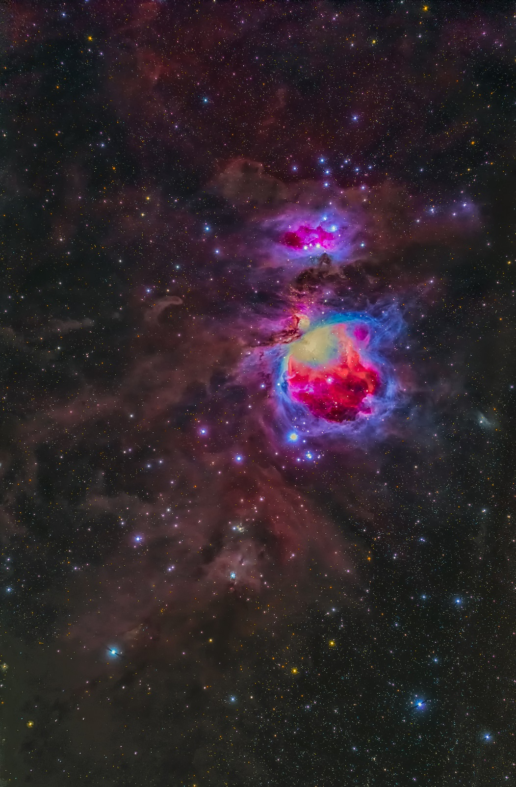

<!DOCTYPE html>
<html>

<head><meta name="generator" content="Hexo 3.8.0">
  <meta charset="utf-8">
  
  <title>【遠征記】2020年11月 初しらびそ，八ヶ岳 | ほしよみ大学生のブログ</title>
  <meta name="viewport" content="width=device-width">
  <meta name="description" content="あいさつこんにちは．前回の記事で赤道儀を壊してからまだ見積もりも来ていないような状態ですが，今月の新月期もさくっと遠征に行きました．">
<meta name="keywords" content="写真,天体写真,遠征記,機材,赤道儀">
<meta property="og:type" content="article">
<meta property="og:title" content="【遠征記】2020年11月 初しらびそ，八ヶ岳">
<meta property="og:url" content="http://dabokun.github.io/2020/11/17/00000040-2020-11/index.html">
<meta property="og:site_name" content="ほしよみ大学生のブログ">
<meta property="og:description" content="あいさつこんにちは．前回の記事で赤道儀を壊してからまだ見積もりも来ていないような状態ですが，今月の新月期もさくっと遠征に行きました．">
<meta property="og:locale" content="ja">
<meta property="og:image" content="http://dabokun.github.io/2020/11/17/00000040-2020-11/card.jpg">
<meta property="og:updated_time" content="2020-11-18T10:11:37.511Z">
<meta name="twitter:card" content="summary_large_image">
<meta name="twitter:title" content="【遠征記】2020年11月 初しらびそ，八ヶ岳">
<meta name="twitter:description" content="あいさつこんにちは．前回の記事で赤道儀を壊してからまだ見積もりも来ていないような状態ですが，今月の新月期もさくっと遠征に行きました．">
<meta name="twitter:image" content="http://dabokun.github.io/2020/11/17/00000040-2020-11/card.jpg">
<meta name="twitter:creator" content="@dabo_pic">
  
  <link rel="alternative" href="/atom.xml" title="ほしよみ大学生のブログ" type="application/atom+xml">
  
  
  <link rel="icon" href="/images/favicon.png">
  
  <link rel="stylesheet" href="/css/style.css">
  <!--[if lt IE 9]><script src="//html5shiv.googlecode.com/svn/trunk/html5.js"></script><![endif]-->
  
</head></html>
<body>
  <div id="container">
    <div class="mobile-nav-panel">
	<i class="icon-reorder icon-large"></i>
</div>
<header id="header">
	<h1 class="blog-title">
		<a href="/">ほしよみ大学生のブログ</a>
	</h1>
	<nav class="nav">
		<ul>
			<li><a href="/">Home</a></li><li><a href="/categories">Categories</a></li><li><a href="/tags">Tags</a></li><li><a href="/archives">Archives</a></li><li><a href="/about">About</a></li><li><a href="/work">Work</a></li>
			<li><a id="nav-search-btn" class="nav-icon" title="Search"></a></li>
			<li><a href="https://github.com/dabokun"></a>
			</li>
			<li><a href="https://twitter.com/dabo_pic"></a></li>
			<li><a href="/atom.xml" id="nav-rss-link" class="nav-icon" title="RSS Feed"></a>
			</li>
		</ul>
	</nav>
	<div id="search-form-wrap">
		<form action="//google.com/search" method="get" accept-charset="UTF-8" class="search-form"><input type="search" name="q" class="search-form-input" placeholder="Search"><button type="submit" class="search-form-submit">&#xF002;</button><input type="hidden" name="sitesearch" value="http://dabokun.github.io"></form>
	</div>
</header>
    <div id="main">
      <article id="post-00000040-2020-11" class="post">
	<footer class="entry-meta-header">
		<span class="meta-elements date">
			<a href="/2020/11/17/00000040-2020-11/" class="article-date">
  <time datetime="2020-11-17T08:36:06.000Z" itemprop="datePublished">2020-11-17</time>
</a>
		</span>
		<span class="meta-elements author">astr0dab0</span>
		<div class="commentscount">
			
			<a href="http://dabokun.github.io/2020/11/17/00000040-2020-11/#disqus_thread" class="article-comment-link">Comments</a>
			
		</div>
	</footer>
	
	<header class="entry-header">
		
  
    <h1 class="article-title entry-title" itemprop="name">
      【遠征記】2020年11月 初しらびそ，八ヶ岳
    </h1>
  

	</header>
	<div class="entry-content">
		
		
		<div id="toc" class="toc-article">
			<p class="toc-title">目次</p>
			<ol class="toc"><li class="toc-item toc-level-3"><a class="toc-link" href="#あいさつ"><span class="toc-number">1.</span> <span class="toc-text">あいさつ</span></a></li><li class="toc-item toc-level-3"><a class="toc-link" href="#10-11日-しらびそ高原"><span class="toc-number">2.</span> <span class="toc-text">10-11日 しらびそ高原</span></a><ol class="toc-child"><li class="toc-item toc-level-4"><a class="toc-link" href="#大火球"><span class="toc-number">2.1.</span> <span class="toc-text">大火球</span></a></li></ol></li><li class="toc-item toc-level-3"><a class="toc-link" href="#14-15日-八ヶ岳ふれあい公園"><span class="toc-number">3.</span> <span class="toc-text">14-15日 八ヶ岳ふれあい公園</span></a></li><li class="toc-item toc-level-3"><a class="toc-link" href="#撮れた「アイツ」"><span class="toc-number">4.</span> <span class="toc-text">撮れた「アイツ」</span></a></li></ol>
		</div>
		
		<h3 id="あいさつ"><a href="#あいさつ" class="headerlink" title="あいさつ"></a>あいさつ</h3><p>こんにちは．前回の記事で赤道儀を壊してからまだ見積もりも来ていないような状態ですが，今月の新月期もさくっと遠征に行きました．</p>
<a id="more"></a>
<h3 id="10-11日-しらびそ高原"><a href="#10-11日-しらびそ高原" class="headerlink" title="10-11日 しらびそ高原"></a>10-11日 しらびそ高原</h3><p>この日はいつもお世話になっている（前回EM-10Bを貸してくれた）方が「暗い所に行きたいよね」ということで北関東か王滝方面に出ることになっていました．結局天気的に王滝方面としましたが，王滝は上に上がっていく道が通行止めになったとかで，次にあららぎ高原を候補に．が，こちらもスキー場の駐車場がスキー場閉鎖？の影響で使えるか不明．結局天文屋の聖地であるところのしらびそ高原まで出ることにしました．しらびそに行くのは初めてで，途中突然現れるドデカい建造物（トンネルに入る道）に驚きながら，マップを見ているだけで吐きそうになる山道（同行者は5年前あたりと比べるとよく道が舗装されると言っていました）を通っていき現地入り．途中のハイランドしらびそには宿泊客と思われる方が中で食事中っぽい様子．ハイランドしらびそ駐車場での車中泊などは禁止されていましたが，公衆トイレは100円払って深夜も使えそうでした（結局使いませんでしたが，午前3時に行った時は入れそうでした）．</p>
<div class="twitter-wrapper"><blockquote class="twitter-tweet"><a href="https://twitter.com/dabo_pic/status/1326130887172370432" target="_blank" rel="noopener"></a></blockquote></div><script async defer src="//platform.twitter.com/widgets.js" charset="utf-8"></script>
<p>御池山隕石クレーター案内板がある現地駐車場では朝まで我々以外誰もおらず，初回のしらびそを独り占めという贅沢な体験ができました．南側低空は街明かりでイマイチですが，それ以外の特に天頂から北にかけての空は，苦労して来るだけの価値はあるかなと思いました．しらびその駐車場南側は崖のようになっているわけですが，時折その下からガサガサと物音がしたりしてかなり怖かったです．｢ｸﾞﾙﾙﾙ…｣という獣の唸り声みたいなものが聞こえたときはさすがに車に戻って音楽を爆音で流すという始末でした．</p>
<h4 id="大火球"><a href="#大火球" class="headerlink" title="大火球"></a>大火球</h4><p>観測途中そろそろ一回仮眠をとろうとみんなで車にいると，助手席に座っている私の目の左端に強い光が．栃木県と福島県の間を流れた大火球の強烈な閃光でした（最近私はいつも火球を目の端で捉えてしっかり見ることができません）．流れた後その方向を見ると，車の中からでもわかるようなかなり濃い痕が残っているではありませんか！<br>「え？！あれ，痕ですよね？！？！」<br>と私が言うと仮眠をとろうとしていたみんなは一斉に車を飛び出し，永続痕を見てすごいすごいとおおはしゃぎ．その後30分は騒いでいたかと思います．結局，永続痕は少なくとも5分は肉眼でその存在を確認でき，数十分にわたって残っていました．友人が流星痕の様子をタイムラプスに残してくれていました．</p>
<div class="twitter-wrapper"><blockquote class="twitter-tweet"><a href="https://twitter.com/dabo_pic/status/1326901830656339969" target="_blank" rel="noopener"></a></blockquote></div><script async defer src="//platform.twitter.com/widgets.js" charset="utf-8"></script>
<p>流星の永続痕をしっかりと見るのは5年余の天文人生で初めてで，貴重な経験をしました．</p>
<p>当該流星本体が流れる映像は<a href="https://www.youtube.com/watch?v=rlNZXBPRK74" target="_blank" rel="noopener">こちら</a>などで見ることができます．</p>
<h3 id="14-15日-八ヶ岳ふれあい公園"><a href="#14-15日-八ヶ岳ふれあい公園" class="headerlink" title="14-15日 八ヶ岳ふれあい公園"></a>14-15日 八ヶ岳ふれあい公園</h3><p>しらびそでの私の撮影について何も述べませんでしたが，借りたEM-10Bは歩留まりが相変わらず悪く，結局しらびそ撮影で使えるデータは45分あまりだったのです．この日八ヶ岳に行く前日に赤道儀のウォームホイール？を金槌でカンカン叩いて外し，ギアに当て直す作業をしました．果たして改善されるかどうか．<br>この日は一旦都内に出て仕事終わりの友人を拾い，野辺山に向かいました．途中サービスエリアのガソリンスタンドで店員にタイヤがヤバいよと指摘され，（そんなことを言われたのが初めてというのもあってどう対応すればいいかわからず）結局フロント2本だけ交換してしまいました．確かに来年1月交換予定だったのでヤバいのは事実なんでしょうが，ぼられてたらいやだなあ…という気持ちです．<br>長坂ICで降り，清里の小作でほうとうを食べて野辺山現地入り．この日は知り合いも来ていたので美し森駐車場にも顔を出しましたが，今まで見たことないくらいたくさんの人がいました．たぶんほとんど星見の人たちだったと思います．</p>
<div class="twitter-wrapper"><blockquote class="twitter-tweet"><a href="https://twitter.com/dabo_pic/status/1327539509328711680" target="_blank" rel="noopener"></a></blockquote></div><script async defer src="//platform.twitter.com/widgets.js" charset="utf-8"></script>
<p>いつもは農地の中を通っている側道のようなところで観測しているのですが，結局八ヶ岳ふれあい公園の駐車場で朝まで過ごしました．ここにも初めて来ましたが，明るい低空が木々に隠されるのでいい感じに暗い印象でした．トイレもあるし，また使おうと思います．<br>↓明け方のふれあい公園です，秋～冬の朝，という感じで雰囲気がとても良かった．<br><div class="twitter-wrapper"><blockquote class="twitter-tweet"><a href="https://twitter.com/dabo_pic/status/1327730852340531200" target="_blank" rel="noopener"></a></blockquote></div><script async defer src="//platform.twitter.com/widgets.js" charset="utf-8"></script></p>
<p>さて，赤道儀の方は相変わらずFSQ+フラットナー+3分露光には耐えられず，赤経方向に流れてしまいます．拡大して微光星を観察してみると，確かに微光星1個分くらいの振幅で，数秒～数十秒周期でゆらゆらと動いている様子が確認できました．おそらくギアに問題があるのかなあと考えていますが，よくわかっていません．借りていて文句を言うのも失礼な話ですが，少なくとも400mm以上の撮影に使える赤道儀とは言い難いものでしたので，次の撮影では使って135mmかなあと考えています．</p>
<div class="twitter-wrapper"><blockquote class="twitter-tweet"><a href="https://twitter.com/dabo_pic/status/1327618302936444929" target="_blank" rel="noopener"></a></blockquote></div><script async defer src="//platform.twitter.com/widgets.js" charset="utf-8"></script>
<p>他の方も随所で述べられていますが，この日は雲もなく，湿度も低く，本当に良い空でした．<br>翌朝小淵沢の延命の湯に入ってから帰りましたが，八ヶ岳高原ラインからの眺めも最高で，夜の環境の良さを表していたのではないかと考えています．</p>
<div class="twitter-wrapper"><blockquote class="twitter-tweet"><a href="https://twitter.com/dabo_pic/status/1327743460497969152" target="_blank" rel="noopener"></a></blockquote></div><script async defer src="//platform.twitter.com/widgets.js" charset="utf-8"></script>
<div class="twitter-wrapper"><blockquote class="twitter-tweet"><a href="https://twitter.com/dabo_pic/status/1327751328865472512" target="_blank" rel="noopener"></a></blockquote></div><script async defer src="//platform.twitter.com/widgets.js" charset="utf-8"></script>
<p>↓ビーノではなくトリシティというバイクですね（写真にも写ってるし…）．<br><div class="twitter-wrapper"><blockquote class="twitter-tweet"><a href="https://twitter.com/dabo_pic/status/1327799169315049473" target="_blank" rel="noopener"></a></blockquote></div><script async defer src="//platform.twitter.com/widgets.js" charset="utf-8"></script><br><div class="twitter-wrapper"><blockquote class="twitter-tweet"><a href="https://twitter.com/dabo_pic/status/1327799341788983296" target="_blank" rel="noopener"></a></blockquote></div><script async defer src="//platform.twitter.com/widgets.js" charset="utf-8"></script></p>
<h3 id="撮れた「アイツ」"><a href="#撮れた「アイツ」" class="headerlink" title="撮れた「アイツ」"></a>撮れた「アイツ」</h3><p>二晩の間はずっと M42 オリオン大星雲を撮っていまして，一応観賞に耐えそうなものができたのでここに載せておきます．これで M31，M45，M42 という三大有名天体すべてFSQで露光するという今年の密かな目標を達成したことになります．来年，あるいは来月以降はもう少しニッチなところを攻めていきたいと考えています．</p>
<p></p>
<div style="text-align: center;">
「M42 オリオン大星雲」<br>
2020年11月10日 22時25分～ 長野県 しらびそ高原にて<br>
2020年11月14日 22時43分～ 長野県 八ヶ岳自然文化園にて<br>
タカハシ FSQ-85EDP + フラットナー1.01x (455mm F5.4)<br>
Canon EOS 6D<br>
ISO-4000 / 180s * 29<br>
ISO-5000 / 144s * 54<br>
Total: 216.6 min<br>
タカハシ EM-10B<br>
RStacker / ステライメージ8 / Adobe Lightroom CC / Photoshop CC<br>
[<a href="https://www.astrobin.com/ilyiet/" target="_blank" rel="noopener">AstroBin</a>], [<a href="https://www.flickr.com/photos/138311056@N05/50610206442/in/dateposted-public/" target="_blank" rel="noopener">Flickr</a>], [<a href="https://astrodabo.tumblr.com/post/634958857362456576/m42-the-great-orion-nebula-taken-at-shirabiso" target="_blank" rel="noopener">Tumblr</a>]<br><br>
</div>

<p>だいぶきつめな色合いにしてしまいましたが，いかがでしょうか？意外と北側の赤い部分が出てくれたりして個人的には満足です．星像も，流れていたので少し肥大気味ですが悪くはない気がしています．<br>それでは．</p>

		
	</div>
	<footer class="article-footer">
		<a href="https://twitter.com/intent/tweet?text=%E3%80%90%E9%81%A0%E5%BE%81%E8%A8%98%E3%80%912020%E5%B9%B411%E6%9C%88%20%E5%88%9D%E3%81%97%E3%82%89%E3%81%B3%E3%81%9D%EF%BC%8C%E5%85%AB%E3%83%B6%E5%B2%B3｜%E3%81%BB%E3%81%97%E3%82%88%E3%81%BF%E5%A4%A7%E5%AD%A6%E7%94%9F%E3%81%AE%E3%83%96%E3%83%AD%E3%82%B0&url=http://dabokun.github.io/2020/11/17/00000040-2020-11/" class="twitter-share-button" target="_blank" title="Twitter"></a>
		<script async src="https://platform.twitter.com/widgets.js" charset="utf-8"></script>

		<div id="fb-root"></div>
		<script async defer crossorigin="anonymous" src="https://connect.facebook.net/ja_JP/sdk.js#xfbml=1&version=v4.0"></script>
		<div class="fb-share-button" data-href="http://dabokun.github.io/2020/11/17/00000040-2020-11/" data-layout="button_count" data-size="small"><a target="_blank" href="https://www.facebook.com/sharer/sharer.php?u=https%3A%2F%2Fdabokun.github.io%2F&amp;src=sdkpreparse" class="fb-xfbml-parse-ignore">シェア</a></div>
	</footer>
	<footer class="entry-footer">
		<div class="entry-meta-footer">
			<span class="category">
				
  <div class="article-category">
    <a class="article-category-link" href="/categories/expedition/">遠征記</a>
  </div>

			</span>
			<span class=" tags">
				
  <ul class="article-tag-list"><li class="article-tag-list-item"><a class="article-tag-list-link" href="/tags/photography/">写真</a></li><li class="article-tag-list-item"><a class="article-tag-list-link" href="/tags/astrophotography/">天体写真</a></li><li class="article-tag-list-item"><a class="article-tag-list-link" href="/tags/equipments/">機材</a></li><li class="article-tag-list-item"><a class="article-tag-list-link" href="/tags/mount/">赤道儀</a></li><li class="article-tag-list-item"><a class="article-tag-list-link" href="/tags/expedition/">遠征記</a></li></ul>

			</span>
		</div>
	</footer>
	
	
<nav id="article-nav">
  
    <a href="/2020/11/20/00000041-asimproc-start/" id="article-nav-newer" class="article-nav-link-wrap">
      <strong class="article-nav-caption">Newer</strong>
      <div class="article-nav-title">
        
          天体画像処理研究会を立ち上げました
        
      </div>
    </a>
  
  
    <a href="/2020/10/29/00000039-2020-10/" id="article-nav-older" class="article-nav-link-wrap">
      <strong class="article-nav-caption">Older</strong>
      <div class="article-nav-title">
        
          【遠征記】2020年10月 いろいろ
        
      </div>
    </a>
  
</nav>

	
</article>


<section id="comments">
	<div id="disqus_thread">
		<noscript>Please enable JavaScript to view the <a href="//disqus.com/?ref_noscript">comments powered by
				Disqus.</a></noscript>
	</div>
</section>

    </div>
    <div class="mb-search">
  <form action="//google.com/search" method="get" accept-charset="utf-8">
    <input type="search" name="q" results="0" placeholder="Search">
    <input type="hidden" name="q" value="site:dabokun.github.io">
  </form>
</div>
<footer id="footer">
	<h1 class="footer-blog-title">
		<a href="/">ほしよみ大学生のブログ</a>
	</h1>
	<span class="copyright">
		&copy; 2020 astr0dab0<br>
		Modify from <a href="http://sanographix.github.io/tumblr/apollo/" target="_blank">Apollo</a> theme, designed by <a href="http://www.sanographix.net/" target="_blank">SANOGRAPHIX.NET</a><br>
		Powered by <a href="http://hexo.io/" target="_blank">Hexo</a>
	</span>
</footer>
    
<script>
  var disqus_shortname = 'astr0dab0';
  
  var disqus_url = 'http://dabokun.github.io/2020/11/17/00000040-2020-11/';
  
  (function(){
    var dsq = document.createElement('script');
    dsq.type = 'text/javascript';
    dsq.async = true;
    dsq.src = '//go.disqus.com/embed.js';
    (document.getElementsByTagName('head')[0] || document.getElementsByTagName('body')[0]).appendChild(dsq);
  })();
</script>


<script src="//ajax.googleapis.com/ajax/libs/jquery/2.0.3/jquery.min.js"></script>


<link rel="stylesheet" href="/fancybox/jquery.fancybox.css" media="screen" type="text/css">
<script src="/fancybox/jquery.fancybox.pack.js"></script>


<script src="/js/script.js"></script>
  </div>
</body>
</html>